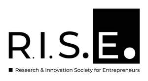
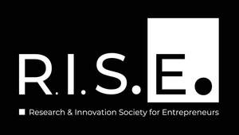

Trade Mark Journal No.2026/009 27 February 2026
UK00004310147 14 December 2025 (35,36,41,42)
Mark 1

Mark 2

- Class 35
- Business consultancy services; Business consulting services; Business networking services; Business marketing services; Business advisory services; Business strategy services; Relocation services for business; Business relocation services; Business research services; Business secretarial services; Business management services; Business analysis services; Business marketing consulting services; Business administration services; Business planning services for enterprises; Business promotion services; Business strategy development services; Outsourcing services [business assistance]; Business consultation services; Business brokerage services; Business merger services; Business expertise services; Business intermediary services; Professional business consultancy services; Business management and consultancy services; Business management consultancy services; Acquisitions (Business -) consulting services; Business examinations services; Business introduction services; Business consultancy and advisory services; Business advisory and consultancy services; Business administrative services for the relocation of businesses; Business marketing consultation services; Business planning services; Business management and consulting services; Business management consulting services; Business management services relating to the development of businesses; Business intelligence services; Business invoicing services; Business advisory services relating to business liquidations; Advisory services relating to business management and business operations; Business appraisal services; Advisory services (Business -) relating to the management of businesses; Business consultancy services relating to manufacturing; Business consultancy services for digital transformation; Business management advisory services relating to commercial enterprises; Business consulting for enterprises; Business networking; Business marketing consultancy; Business research; Business administration; Commercial business management; Providing business management start-up support for other businesses; Business advisory services relating to company performance; Business consultancy services relating to product development; Assistance and consultancy services in the field of business management of companies in the energy sector; Providing assistance in the management of industrial or commercial enterprises; Business management assistance for industrial or commercial companies; Assistance to commercial enterprises in the management of their business; Management assistance to commercial companies; Assistance to industrial or commercial enterprises in the running of their business; Providing business management and operational assistance to commercial businesses; Assistance to management in commercial enterprises in respect of advertising; Business advisory services relating to product development; Management assistance to commercial firms; Commercial assistance in business management; Help in the management of business affairs or commercial functions of an industrial or commercial enterprise; Management and operation assistance to commercial businesses; Retail services in relation to educational supplies; Career information and advisory services (other than educational and training advice); Wholesale services in relation to educational supplies; Advertising services relating to financial services; Organisation and conducting of product presentations; Organisation of exhibitions and trade fairs for business and promotional purposes; Planning and conducting of trade fairs, exhibitions and presentations for economic or advertising purposes; Planning and conducting of trade fairs, exhibitions and presentations for commercial or advertising purposes; Organisation of trade fairs; Commercial information research studies; Dissemination of business information; Dissemination of data relating to business; Dissemination of commercial information; Dissemination of data relating to advertising; Research of business information; Collection of information relating to market research; Research services relating to advertising; Marketing research and analysis; Marketing research or analysis; Dissemination of information relating to the recruitment of graduates; Business management consulting services in the field of information technology; Business consultancy relating to the administration of information technology; Business services relating to the arrangement of joint ventures; Advertising services relating to financial investment; Business consultancy services relating to management of fund raising campaigns; Advisory services (Business -) relating to the management of public sector businesses; Business intermediary services relating to the matching of potential private investors with entrepreneurs needing funding; Business consultancy services relating to the marketing of fund raising campaigns; Business consultancy services relating to the promotion of fund raising campaigns; Business advice relating to growth financing; Development and implementation of marketing strategies for others; Provision of business assistance; Operational business assistance to enterprises; Career advisory services (other than education and training advice); Market research and marketing studies; Market research studies; Marketing research services; Marketing research.
- Class 36
- Venture capital services; Venture capital and venture capital management services; Venture capital and project capital investment services; Venture capital (Services for the provision of -); Venture capital funding services for companies; Venture capital (Services for the finding of -); Venture capital funding services for inventors; Venture capital funding services for commercial entities; Private placement and venture capital investment services; Investment of capital (Services for -); Capital investment services; Venture capital funding services for universities; Venture capital funding services to emerging and start-up companies; Venture capital funding services for non-profit entities; Venture capital financing; Venture capital funding services for research institutions; Venture capital management; Capital investment advisory services; Venture capital fund management; Administration of capital investment services; Brokerage services for capital investments; Consultancy of capital investment; Capital investment consulting; Capital investment; Investment (Capital -); Financial management of risk capital, investment capital and development capital; Capital investments; Provision of investment capital; Arranging investments, in particular capital investments, financing services and insurance; Investment services; Investment business services; Capital fund investment; Management of capital investment funds; Management of a capital investment fund; Capital investment fund management; Investment fund services; Fund investment services; Investment of funds (Services for -); Financial investment fund services; Capital investment consultation; Capital investment brokerage; Financial investment services; Private equity fund investment services; Equity capital investment; Securities services relating to capital restructuring; Financial and investment consultancy services; Provision of finance for business ventures; Financial consultancy services relating to infrastructure investment; Capital fund management; Corporate holding of share capital services; Investment bank services; Financing and funding services; Providing financing to emerging and start-up companies; Providing funding for research institutions; Providing funding for universities; Providing funding for governments; Funding of loans; Providing funding for the development of new technology; Funding of product development; Providing funding for inventors.
- Class 41
- Educational services; Educational consultancy services; Educational and training services; Educational and teaching services; Business educational services; Religious educational services; Educational information services; Accreditation of educational services; Educational advisory services; Educational institute services; Educational assessment services; Educational services for providing courses of education; Examination services (Educational -); Educational examination services; Education services; Educational services for the clergy; Organisation of seminars and conferences; Organisation of seminars; Organisation of meetings and conferences; Organisation of training seminars; Seminars; Organisation of conferences, exhibitions and competitions; Organisation of educational seminars; Arranging of workshops and seminars; Organising of educational seminars; Conducting courses, seminars and workshops; Organization of seminars; Organising of educational conferences; Organising of education seminars; Organising of education conferences; Organisation of conferences relating to training; Organisation of seminars relating to training; Arranging and conducting conferences and seminars; Conducting of seminars and congresses; Arranging and conducting of conferences, congresses and symposiums; Arranging and conducting of seminars and workshops; Arranging and conducting of workshops and seminars; Education; Vocational education; Health education; Education and training; Academies [education]; Music education; University education services; Career counseling [education]; Pre-school education; Vocational education and training services; Education, teaching and training; Academy services (Education -); Education academy services; Academy education services; Education and training consultancy; Education academy services for teaching art history; Education and instruction; Services of schools [education]; Education academy services for teaching languages; Vocational education relating to self-defence.
- Class 42
- Scientific and technological services; Scientific technological services; Scientific and technological design; Technological research; Scientific and technological research in the field of natural disasters; Chemical technological research; Technological studies; Scientific and industrial research; Technological research services; Scientific research and development; Consultancy in the field of technological research; Scientific and technological research relating to patent mapping; Research (Scientific -); Scientific research; Scientific research services; Scientific research for medical purposes; Scientific research in the field of social medicine; Technological engineering analysis; Laboratory (Scientific -) services; Scientific laboratory services; Technological consultancy; Technical research; Preparation of technological research reports; Consultancy in the field of scientific research; Scientific services; Preparation of reports relating to scientific research; Provision of information relating to scientific research; Advisory services relating to scientific research; Research and development services; Research and development services relating to vaccines; Blood analysis services for scientific research purposes; Scientific research relating to ecology; Research and development services relating to fertilisers; Cell culture services for scientific and research purposes, for others; Conducting research and technical project studies relating to the use of natural energy; Research relating to science; Scientific research and analysis; Research and development for others; Research services; Provision of information concerning research and technical project studies relating to the use of natural energy; Development (Research and -) of products; Technical research projects and studies; Research relating to technology; Research services relating to computer programmes; Scientific research relating to bacteriology; Advisory services relating to technological research; Provision of information relating to technological research; Provision of information and data relating to medical and veterinary research and development; Scientific research relating to biology; Biochemical research and development; Research laboratory services; Oceanographic research services; Scientific services and research relating thereto; Biological research, clinical research and medical research; Research relating to biotechnology; Consultancy services relating to technological research; Preparation of reports relating to technical research; Scientific research relating to genetics; Research and development services in the field of antibody technology; Design and development of medical technology; Research in measurement technology; Science and technology services; Design and development of new technology for others; Development of new technology for others; Design and development of computer software for use with medical technology; Consultancy relating to filtration technology; Computer technology consultancy; Telecommunications technology consultancy; Consultancy relating to membrane technology; Research in the field of communications technology; Research in the field of telecommunications technology; Consultancy services in the field of technological development; Development of data programs; Research relating to the development of computer programs and software; Research relating to computer programs; Development of computer programs for simulating laboratory experiments; Research in the field of computer programs and software; Research laboratories; Research and development services in the field of antibodies; Laboratory research; Development of computer programs; Software research; Research and development services in the field of immunohistology.
Junyu Qian
Xueqi Yuan